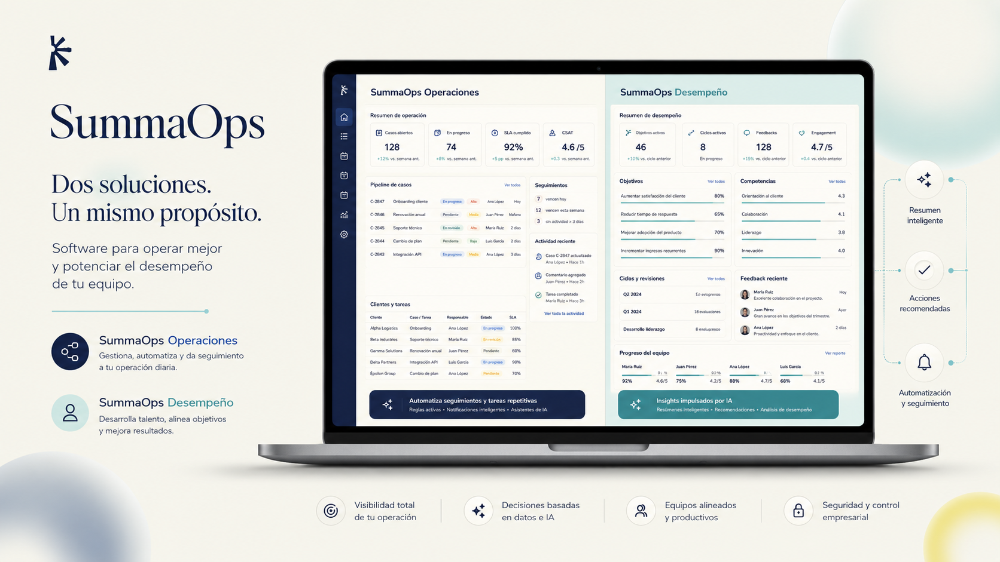
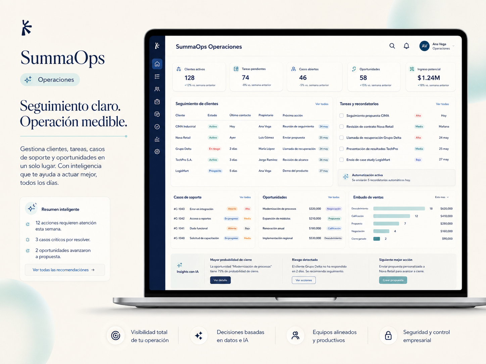
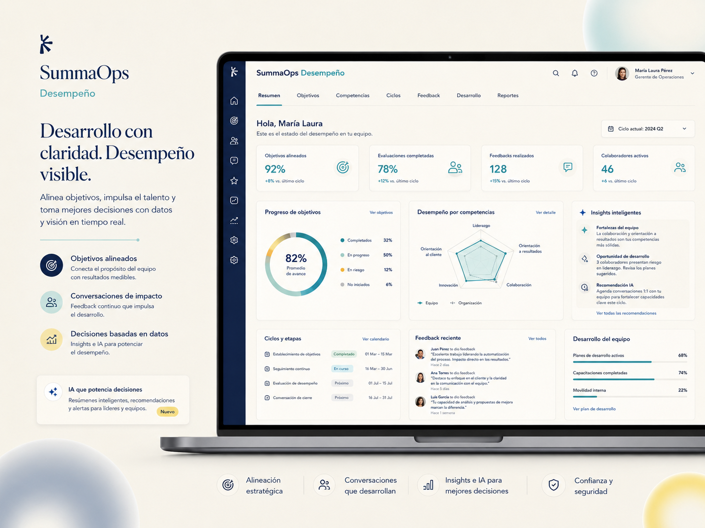

Seguimientos con más trazabilidad
Clientes, tareas, oportunidades o casos pueden necesitar un sistema más claro para saber estado, responsable y próximos pasos.
Aplicaciones operativas potenciadas con IA
Soluciones para ordenar operaciones, automatizar seguimientos y gestionar evaluación de desempeño, con módulos adaptables según las necesidades reales de cada empresa.

Necesidades que resolvemos
A medida que una empresa suma clientes, tareas, personas o procesos, aparecen nuevas necesidades de seguimiento, visibilidad, automatización y medición.
Clientes, tareas, oportunidades o casos pueden necesitar un sistema más claro para saber estado, responsable y próximos pasos.
Cuando la información está en distintos lugares, ordenar datos y registros ayuda a trabajar con más claridad.
Documentar, sistematizar y automatizar ayuda a que la operación tenga criterios comunes y sea más fácil de sostener.
Tener información disponible y medible facilita priorizar, detectar oportunidades y accionar a tiempo.
Muchas tareas administrativas, recordatorios, reportes o seguimientos pueden simplificarse con automatizaciones.
Objetivos, feedback, competencias y planes de mejora pueden gestionarse de forma más clara y sistemática.
Soluciones SummaOps
SummaOps parte de dos soluciones base —Operaciones y Desempeño— que pueden adaptarse con módulos de IA según lo que cada empresa necesita ordenar, automatizar o medir.
Para gestionar clientes, tareas, soporte, oportunidades y procesos internos desde un sistema claro y medible.
Para ordenar evaluaciones de desempeño, objetivos, feedback, competencias y planes de mejora.
Para sumar automatizaciones, reportes, alertas, recordatorios, resúmenes o flujos específicos según cada necesidad.
Solución 01
Una solución para gestionar seguimientos, tareas, clientes, oportunidades, soporte y procesos internos desde un sistema simple, claro y medible.
Reunir en un mismo lugar datos clave sobre clientes, tareas, casos, oportunidades o procesos.
Visualizar estados, responsables, fechas, prioridades y próximos pasos.
Reducir tareas manuales vinculadas al seguimiento operativo.
Contar con información ordenada para revisar gestión, carga de trabajo y evolución.
Configurar la solución para seguimiento comercial, soporte, reclamos, postventa, cobranzas o tareas internas.


Solución 02
Una solución para ordenar evaluaciones de desempeño, objetivos, competencias, feedback y planes de mejora desde un sistema simple y adaptable.
Centralizar autoevaluaciones, evaluaciones de líderes y registros de desempeño.
Visualizar metas, avances, acuerdos y próximos pasos.
Definir competencias clave por rol, equipo o etapa de desarrollo.
Documentar conversaciones, fortalezas, oportunidades de mejora y compromisos.
Contar con información ordenada para acompañar decisiones de desarrollo, liderazgo y gestión de personas.
IA aplicada
A partir de SummaOps Operaciones y SummaOps Desempeño, podemos sumar módulos y automatizaciones para responder a necesidades específicas de cada empresa.
Para que próximos pasos, vencimientos o tareas importantes no dependan solo del seguimiento manual.
Para visualizar actividad, avances, cargas de trabajo, indicadores o resultados.
Para sintetizar información de casos, clientes, conversaciones, evaluaciones o seguimientos.
Para ordenar casos, tareas, solicitudes o registros según criterios definidos.
Para apoyar comunicaciones comerciales, de soporte, seguimiento o feedback.
Para adaptar etapas, estados, responsables y automatizaciones al proceso real de la empresa.
Cómo funciona
Partimos de un proceso real de tu empresa y diseñamos una primera solución útil, simple y fácil de adoptar. Después se puede ajustar, ampliar o automatizar según el uso y la evolución del negocio.
En una primera reunión relevamos cómo trabajan hoy, qué necesitan seguir, medir o automatizar y qué resultado quieren lograr.
Diseñamos una versión inicial enfocada en resolver una necesidad concreta, sin sumar complejidad innecesaria.
Armamos campos, vistas, estados, responsables, alertas, automatizaciones y reportes básicos.
Validamos que la solución sea clara, útil y fácil de usar para quienes la van a sostener en el día a día.
Mejoramos la solución según el uso real y sumamos nuevos módulos o automatizaciones cuando aportan valor.
Método propio
Una forma simple de pasar de una necesidad operativa concreta a una solución funcionando, medible y adaptable.
Entendemos rápidamente cómo funciona hoy el proceso y qué necesita ordenar, automatizar o medir la empresa.
Identificamos dónde puede generarse mayor valor inicial: seguimiento, trazabilidad, automatización, medición o gestión interna.
Diseñamos una primera versión clara de la aplicación, módulo o automatización.
Configuramos la solución, la probamos con usuarios reales y acompañamos la adopción inicial.
Medimos el uso, ajustamos lo necesario y definimos próximos módulos o mejoras.
Entender → Priorizar → Configurar → Probar → Evolucionar
Experiencia aplicada
SummaOps combina experiencia real en operaciones, atención al cliente, ventas, liderazgo y desarrollo de equipos con herramientas de IA y automatización.
No partimos de la tecnología por la tecnología. Partimos de entender cómo trabajan las personas, dónde se necesita más seguimiento y qué procesos pueden simplificarse para ganar claridad, eficiencia y capacidad de decisión.
Testimonios
“Pablo es un profesional altamente dedicado, enfocado en generar resultados y hacer crecer a las empresas de forma pragmática y eficiente. Tiene una combinación poco habitual de liderazgo, experiencia y capacidad para capitalizarla. Su participación fue muy valiosa en la mejora de procesos de Verde.”
“Pablo me brindó herramientas para gestionarme mejor en el ámbito laboral y personal. Destaco su calidad humana, su forma de comunicarse y su capacidad para ayudarte a ver tus fortalezas y potenciarlas.”
Sobre SummaOps
SummaOps desarrolla aplicaciones operativas potenciadas con IA para ayudar a empresas a ordenar procesos, automatizar seguimientos y mejorar su capacidad de gestión.
Combinamos experiencia real en operaciones, atención al cliente, ventas, liderazgo y desarrollo de equipos con herramientas de automatización e inteligencia artificial. El foco no está en sumar tecnología por moda, sino en crear soluciones simples, útiles y fáciles de adoptar.
La empresa es liderada por Pablo Kerekes, consultor en operaciones, CX y liderazgo, con más de 20 años de experiencia en organizaciones de alto crecimiento, operaciones regionales y emprendimientos propios.

Contacto
Agendemos una primera conversación para entender qué necesitás mejorar y evaluar una solución simple, útil y fácil de implementar.